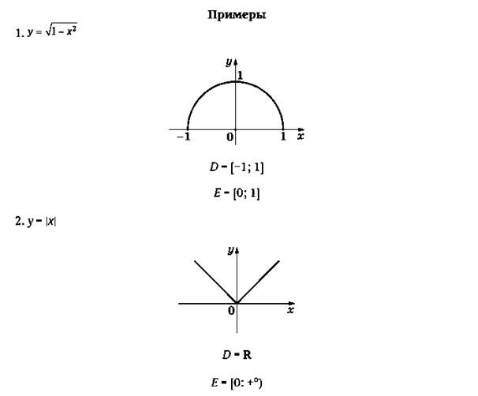
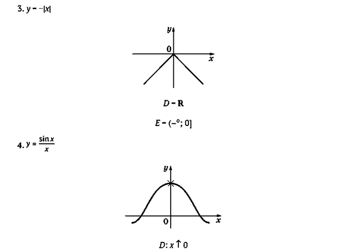
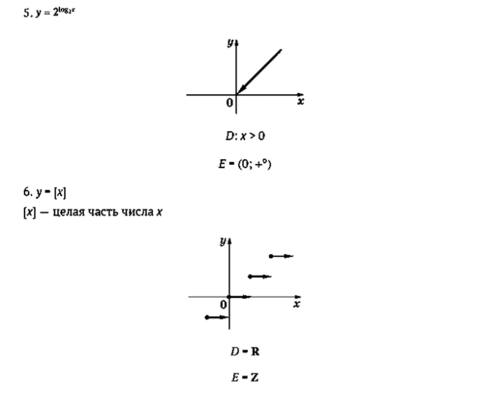
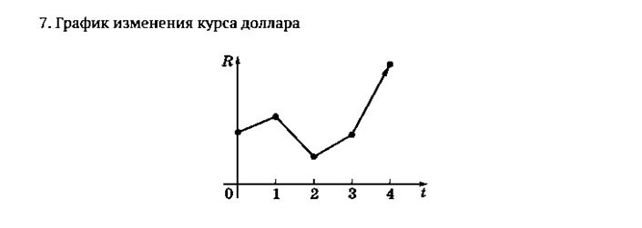
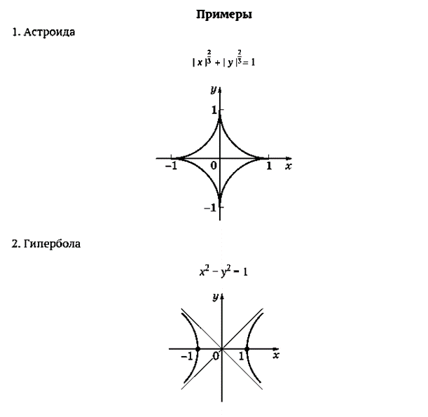
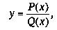
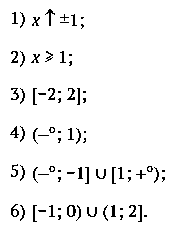
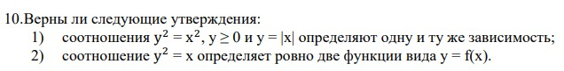

1.Задание функции
Для того чтобы задать функцию, нужно указать:
1)множество всех возможных значений переменной x. Это множество обозначается буквой D и называется областью определения функции;
2) правило, по которому каждому числу x из множества D сопоставляется число y, определяемое числом x. Это число y называется значением функции в точке x.
2. Функциональные обозначения
Функция обычно обозначается одной буквой, например f. Значение функции f в точке x обозначается f(x).
Итак, если задана функция f, то задано множество чисел D и каждому числу x ∈ D сопоставлено число y = f(x). Область определения функции f будем обозначать D(f).
Переменную x называют аргументом, D — множеством возможных значений аргумента.
Пусть задана функция y = f(x) с областью определения D(f). Множество значений, которые принимает переменная y, так и называют — множество значений функции. Это множество будем обозначать E(f) или просто E. Можно сказать, что число a входит в множество значений функции f, если найдется число x из области определения функции такое, что a = f(x).
Обратим внимание на то, что если для значения аргумента x из области определения соответствующее значение функции y = f(x) находится однозначно, т. е. единственным образом, то для значения аргумента y из множества значений соответствующее значение x должно существовать, но оно не обязательно является единственным.2.График функции
Графиком функции f называется множество точек плоскости с координатами (x, f(x)), где x пробегает область определения функции f.
Заметим, что понятие графика функции тесно связано с понятием системы координат. Одна и та же функция в разных системах координат будет иметь разные графики.




4.Способы задания функции.
Как задается правило вычисления значений функции?
1) Аналитический способ.При аналитическом способе задания функции правило вычисления задается явной формулой, содержащей определенные операции. Если функция задана формулой и не указаны никакие ограничения, то ее областью определения считается множество всех значений аргумента, при которых выполнимы все операции, участвующие в формуле. Это множество называют естественной областью определения данной функции.
2) Табличный способ. В таблице можно непосредственно указать значения функции, однако лишь для конечного набора значений аргумента. Вычисление значений функции может быть запрограммировано в калькуляторе. Вычислительное устройство может служить способом задания новой функции. Современные вычислительные машины снабжены клавишами, позволяющими немедленно вычислить значения многих функций.
3) Графический способ. По графику можно находить (хотя бы приближенно) значения функции. Графический способ применяется прежде всего для качественного, наглядного представления характера изменения изучаемой функции. Аналитический, табличный и графический способы задания функции, разумеется, не исчерпывают все возможные пути описания функции. Задание правила, по которому происходит вычисление значений функции, может быть выполнено с использованием любого языка — обычного словесного, символического, компьютерного. При этом необходимо следить за тем, чтобы это описание позволяло точно для каждого допустимого значения аргумента однозначно находить сопоставляемые им значения зависимой переменной (функции).
5.Общее понятие зависимости.
Функция — это определенный тип зависимости между переменными, который так часто и называют функциональной зависимостью.
Термин «переменная» применяется для обозначения различных меняющихся величин.
Зависимость между переменными может быть выражена разными способами, лишь бы для любого набора значений переменных можно было бы ответить на вопрос: связаны ли эти значения данной зависимостью или нет? Часто встречается зависимость в форме уравнения, связывающая выражения с переменными.
Пусть дана некоторая зависимость между переменными x и y.
Будем говорить, что y есть функция от x, если для каждого допустимого значения x зависимость позволяет однозначно определить связанное с ним значение y.
Если зависимость задана в форме уравнения, связывающего выражения с переменными, то говорят о неявном задании функции. В отдельных случаях возможен переход от неявного задания функции к явному.

Зависимость между переменными x и y изображается на координатной плоскости с помощью некоторой кривой — графика зависимости. Для того чтобы эта зависимость неявно задавала y как функцию от x, нужно, чтобы всякая прямая, параллельная оси y, пересекала график не более чем в одной точке.
Виды функций
1. Линейные функции. Эти функции задаются формулой y = kx + b, где k и b — определенные числа
Обычно считают, что k ↑ 0. При k = 0 функция y = b является постоянной. Областью определения функции y = kx + b считается вся числовая ось: D = R (если не наложено специальных ограничений на значение аргумента x).
2. Многочленные функции. Эти функции задаются следующими многочленами: y = anxn + an - 1xn - 1 + … + a1x + a0, an↑0. Линейные функции входят в этот класс функций. Многочленные функции можно различать по степени многочлена: квадратичные (n = 2), кубические (n = 3) и т. д. Естественной областью определения многочленных функций считается вся числовая ось: D = R.
3. Рациональные функции. Эти функции задаются отношениями двух многочленов:где P(x) и Q(x) — многочлены.
Многочленные функции входят в этот класс функций, так как в виде Q(x) можно взять постоянную Q(x) = 1.
Область определения рациональной функции — множество всех чисел x, за исключением тех, при которых знаменатель Q(x) обращается в нуль: D ={x ∈ R | Q(x) ↑0}.
4. Степенные функции с дробным показателем.Эти функции задаются формулой вида y = xr, где r — некоторое число, отличное от нуля.
Ясно, что если r — натуральное число, то получается частный случай многочленной функции; если r — целое отрицательное число, то имеем частный случай рациональной функции.
Если r — дробное число, то можно вычислить значение степени xr при любом положительном значении x, что позволяет рассмотреть степенные функции не только с целым, но и любым действительным показателем r ↑0.
5.Основные тригонометрические функции.Это функции y = sin x и y = cos x, определенные при всех значениях аргумента x.
6. Показательные и логарифмические функции.и. При фиксированном основании a (a > 0; a ↑1) эти функции задаются формулами y = а х и y = logax.
Показательные функции определены при всех значениях x, а логарифмические — только при x > 0.
ВОПРОСЫ И ЗАДАНИЯ
1. Какие вам известны способы задания функции?
2. Что такое область определения функции?
3. Как находится область определения функции, заданной формулой?
4. Как вычисляются значения функции, заданной графиком?
5. Какие классы функций вам известны?
6. Что такое неявное задание функции?
7. Всегда ли зависимость между двумя переменными позволяет выразить одну из них как функцию другой?
8. Как по графику зависимости определить, можно ли из этой зависимости выразить одну переменную как функцию от другой?
9. Приведите пример функции, естественной областью определения которой было бы следующее числовое множество:

